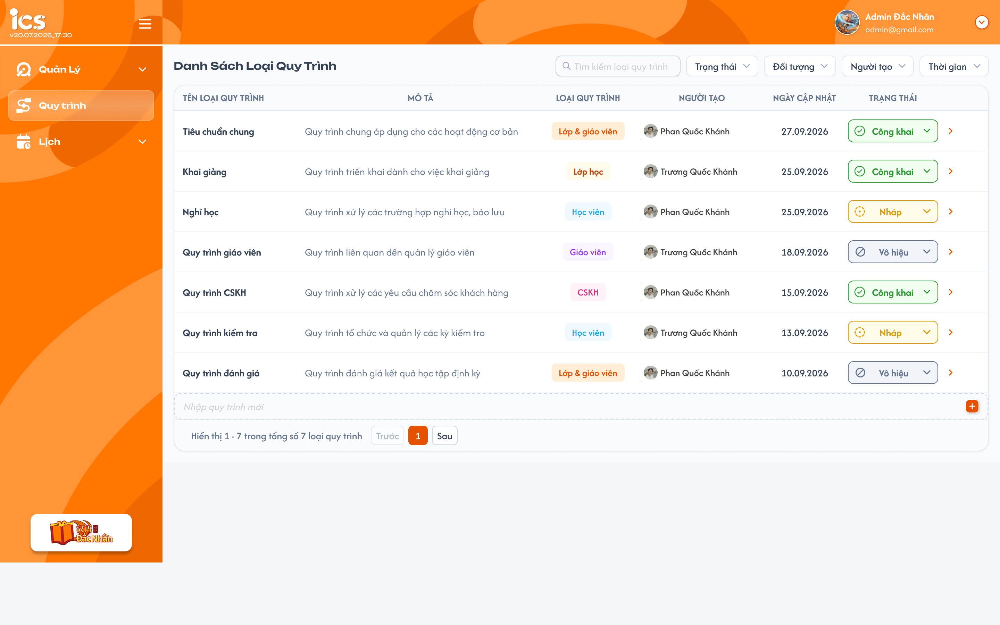
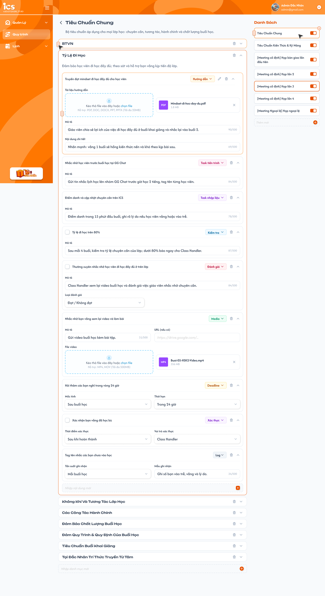
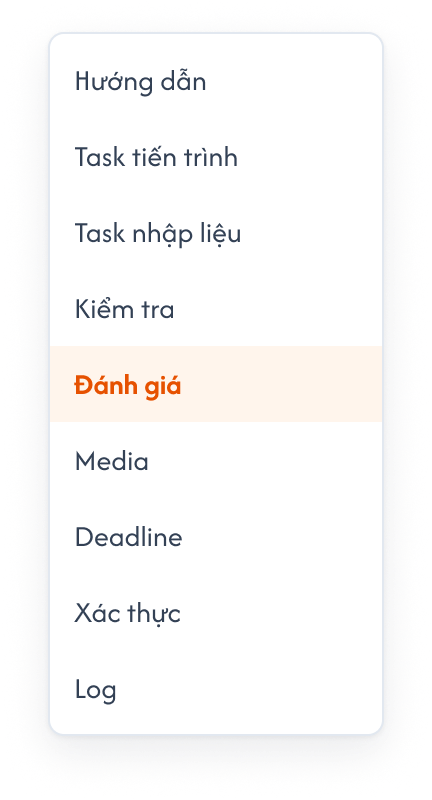

Define quy trình
Menu Quy trình định nghĩa nguồn Action Board theo cấu trúc Package → Category → Action Item, để sử dụng ở nhiều nơi như các tab quy trình trong lớp. Chỉ quy trình Công khai mới được thêm vào lớp. Định nghĩa đã Công khai bị khóa thay đổi; Vô hiệu vẫn hiển thị nội dung đã thêm nhưng chỉ xem. Quy trình ICS dùng chung bảng với ComGao và được quản lý theo center.
1. UI
Trang 1: Danh sách loại quy trình

Danh sách loại quy trình — nhấn để xem ảnh gốc

Mô tả:
- Admin và Class Handler quản lý định nghĩa; Support và Assistant Teacher chỉ xem. Danh sách và chi tiết chỉ lấy dữ liệu thuộc center hiện tại.
Giải thích thành phần:
| Thành phần | Yêu cầu |
|---|---|
| Danh sách | Các cột: Tên loại quy trình, Mô tả, Loại quy trình, Người tạo, Ngày cập nhật, Trạng thái. |
| Tìm kiếm | Tìm theo tên loại quy trình. |
| Bộ lọc | Trạng thái, Đối tượng, Người tạo, Thời gian. |
| Loại quy trình | Đúng 5 loại: Lớp - Giáo viên, Lớp học, Học viên, Giáo viên, CSKH (Support). Nhãn Lớp & giáo viên trong ảnh tương ứng Lớp - Giáo viên. |
| Trạng thái quy trình | Nháp, Công khai, Vô hiệu; áp dụng cho bản ghi ở danh sách quy trình, chọn tại dropdown của dòng. |
| Nhập quy trình mới | Dòng cuối bảng và nút + dùng để thêm quy trình Nháp; chỉ Admin/Class Handler được thao tác. |
| Thông tin quy trình | Tên loại quy trình, Mô tả và Loại quy trình đều bắt buộc khi lưu. Người tạo/Ngày cập nhật do hệ thống ghi nhận. |
| Mũi tên cuối dòng | Mở chi tiết quy trình đã chọn. |
| Phân trang | Hiển thị khoảng bản ghi, tổng số quy trình và Trước/Sau/số trang. |
Điểm cần lưu ý:
- Chỉ cho phép Nháp → Công khai, Nháp → Vô hiệu, Công khai ↔ Vô hiệu. Công khai hoặc Vô hiệu không quay về Nháp.
- Tên và dữ liệu trong ảnh là ví dụ; không cố định số quy trình theo ảnh. Tạo mới tại dòng
Nhập quy trình mớivà nút+như UI mới. - Mọi field nhập/chọn cấu hình đều bắt buộc; thiếu field thì không lưu và chỉ rõ field cần bổ sung.
- Đã Công khai thì không được thêm/sửa/xóa bất kỳ nội dung định nghĩa nào, kể cả khi chuyển sang Vô hiệu. Vẫn được đổi Công khai ↔ Vô hiệu theo rule trên.
Testcase — Danh sách loại quy trình
| Tên testcase | Priority | Loại test | Scenario | Role | Pre-condition | Given / When / Then | Expected Result |
|---|---|---|---|---|---|---|---|
| Case 1: Xem theo center và role | High | Smoke | Flow 1 / REQ01 / REQ07 / EX07 | Admin / Class Handler / Support / Assistant Teacher | Hai center có quy trình | Given mở danh sách ở center A When tìm/lọc, mở chi tiết rồi thử ID center B; Support/Assistant Teacher thử thay đổi dữ liệu Then chỉ xem dữ liệu center A và chặn vượt quyền |
Phân trang/tổng số đúng kết quả; chỉ xem không được thêm/sửa/xóa, kéo thả, toggle hoặc đổi trạng thái. |
| Case 2: Tạo quy trình và field bắt buộc | High | Smoke | Flow 5 / REQ07 / REQ08 / EX06 | Admin / Class Handler | Đang ở center A | Given nhập tại dòng Nhập quy trình mới và bấm +When lưu đủ thông tin, rồi thử để trống từng field Then tạo quy trình Nháp thuộc center A; thiếu field không lưu |
Dùng chung bảng ComGao, không tạo bản sao riêng cho ICS; Loại chỉ có 5 giá trị đã chốt. |
| Case 3: Chuyển trạng thái hợp lệ | High | Smoke | Flow 2 / REQ02 | Admin / Class Handler | Có quy trình ở ba trạng thái | Given chọn trạng thái mới When thực hiện Nháp → Công khai/Vô hiệu hoặc Công khai ↔ Vô hiệu Then lưu được |
Tải lại vẫn giữ trạng thái đã lưu; phản hồi Thành Công. |
| Case 4: Không quay về Nháp | High | EX01 / REQ02 | Admin / Class Handler | Quy trình đang Công khai hoặc Vô hiệu | Given mở dropdown hoặc gửi yêu cầu đổi về Nháp When kiểm tra chuyển trạng thái Then không cho đổi |
UI không cho chọn Nháp; request trực tiếp cũng bị từ chối; trạng thái cũ giữ nguyên. |
Trang 2: Chi tiết loại quy trình

Cấu hình Action Board nguồn — nhấn để xem ảnh gốc

Mô tả:
- Chọn Package ở Danh Sách bên phải; bên trái hiển thị tên, mô tả và các Category/Action Item của Package đó.
Giải thích field/thành phần:
| Thành phần | Yêu cầu |
|---|---|
| Quay lại | Trở về danh sách loại quy trình. |
| Danh Sách Package | Chọn Package để xem nội dung. Toggle và tay nắm kéo thả chỉ được thao tác khi còn Nháp. |
| Thêm mới Package | Khi còn Nháp, nhập tên tại dòng Thêm mới và bấm +. |
| Category | Hiển thị tên, mô tả, mở/thu gọn, kéo thả và nút xóa. Dòng Nhập danh mục mới thêm Category vào Package đang chọn. |
| Action Item | Hiển thị tên, Loại task, field cấu hình, mở/thu gọn và nút sửa/xóa theo UI. Dòng Nhập nội dung mới thêm item vào Category hiện tại. |
| Kéo thả | Khi còn Nháp, sắp xếp Package trong Danh Sách, Category trong Package và Action Item trong Category. |
| Toggle Package | Enable/Disable Package; độc lập với trạng thái Nháp/Công khai/Vô hiệu ở danh sách quy trình. |
Điểm cần lưu ý:
- Admin/Class Handler chỉ thay đổi định nghĩa khi quy trình còn Nháp. Sau Công khai, khóa tên, mô tả, Package, Category, Action Item, Loại task, field cấu hình, file/URL, kéo thả và toggle Enable/Disable.
- Các control thay đổi được ẩn hoặc vô hiệu hóa khi đã Công khai; vẫn chọn Package và mở/thu gọn để xem được.
- Toggle Package không đổi trạng thái quy trình và không đưa quy trình về Nháp.
- Các checkbox trước một số Action Item trong ảnh chưa được giải thích; không mặc định coi đây là Result của lớp.
- Tên, mô tả và các field cấu hình Package/Category/Action Item đều bắt buộc khi lưu; chỉ kiểm tra field của Loại task đang chọn. Cơ chế lưu/xác nhận xóa khi Nháp chưa thể hiện đầy đủ.
Testcase — Chi tiết loại quy trình
| Tên testcase | Priority | Loại test | Scenario | Role | Pre-condition | Given / When / Then | Expected Result |
|---|---|---|---|---|---|---|---|
| Case 5: Chọn đúng Package và Category | High | Flow 3 / REQ03 | Admin / Class Handler / Support / Assistant Teacher | Có nhiều Package và Category | Given mở chi tiết When đổi Package và mở/thu gọn Category Then hiển thị đúng tên, mô tả và Action Item |
Không lẫn nội dung của Package/Category khác. | |
| Case 6: Quản lý cấu trúc khi Nháp | High | Smoke | Flow 3 / REQ03 | Admin / Class Handler | Quy trình còn Nháp | Given chọn Package/Category When thêm, sửa, xóa hoặc sắp xếp nội dung và lưu thành công Then cấu trúc nguồn cập nhật đúng vị trí |
Tải lại giữ thay đổi; không tự tạo Result tại nơi sử dụng. |
| Case 7: Khóa định nghĩa sau Công khai | High | REQ03 / EX04 | Admin / Class Handler | Quy trình đã Công khai | Given mở chi tiết, rồi chuyển quy trình sang Vô hiệu When thử thêm/sửa/xóa, đổi Loại task/file, kéo thả hoặc toggle Package qua UI/request Then bị từ chối trong cả hai trạng thái |
Không đổi cấu trúc, nội dung hoặc Result lớp; trạng thái quy trình vẫn được đổi theo rule. |
Dropdown Loại task và field cấu hình

Dropdown Loại task — nhấn để xem ảnh gốc

Mô tả:
- Khi còn Nháp, mỗi Action Item chọn một Loại task và cấu hình field tương ứng. Sau Công khai chỉ xem cấu hình đã định nghĩa.
Giải thích field/thành phần:
| Loại task | Field cấu hình theo UI |
|---|---|
| Hướng dẫn | Tài liệu hướng dẫn, Mô tả, Nội dung chi tiết. Kéo thả/chọn file PDF, DOC, DOCX, PPT, PPTX, tối đa 20MB mỗi file. Hiển thị file đã tải với tên/định dạng/dung lượng. |
| Task tiến trình | Mô tả công việc cần thực hiện. |
| Task nhập liệu | Mô tả nội dung cần nhập khi sử dụng. |
| Kiểm tra | Mô tả tiêu chí kiểm tra. |
| Đánh giá | Mô tả và Loại đánh giá; ảnh đang chọn Đạt / Không đạt. |
| Media | Mô tả, URL, File video; kéo thả/chọn file MP4, MOV, tối đa 500MB mỗi file. Có nút gỡ file đã tải. |
| Deadline | Mốc tính và Thời hạn; ví dụ Sau buổi học, Trong 24 giờ. |
| Xác thực | Thời điểm xác thực và Vai trò xác thực; ví dụ Sau khi hoàn thành, Class Handler. |
| Log | Tần suất ghi nhận và Mẫu ghi nhận; ví dụ Mỗi buổi học. |
Điểm cần lưu ý:
- Dropdown có đúng 9 loại theo thứ tự trên; không thêm
Nhận xéttừ Action Board cũ vào UI mới. - Field văn bản có bộ đếm
/500tối đa 500 ký tự. Tất cả field của Loại task đang chọn đều bắt buộc, gồm file/URL khi loại đó có các field này; yêu cầu mới áp dụng cả với URL mà ảnh ghi “nếu có”. - Các giá trị đang chọn trong ảnh là ví dụ; không mặc định là toàn bộ lựa chọn dropdown.
- Chỉ đổi Loại task khi còn Nháp; hiển thị đúng bộ field. Quy trình Nháp chưa được thêm vào lớp nên thao tác này không tác động Result của lớp.
Testcase — Loại task và field cấu hình
| Tên testcase | Priority | Loại test | Scenario | Role | Pre-condition | Given / When / Then | Expected Result |
|---|---|---|---|---|---|---|---|
| Case 8: Chọn Loại task | High | Flow 4 / REQ04 | Admin / Class Handler | Quy trình Nháp có Action Item | Given mở dropdown When lần lượt chọn 9 loại Then hiển thị đúng field của từng loại; thiếu field hoặc vượt 500 ký tự bị từ chối |
Chỉ validate field của loại đang chọn; đúng 9 nhãn; không ghi Result khi đổi loại. | |
| Case 9: Tài liệu và Media | High | Flow 4 / REQ04 / EX02 | Admin / Class Handler | Quy trình Nháp, đang cấu hình Hướng dẫn hoặc Media | Given chọn file đúng loại và trong giới hạn When tải file, rồi thử file sai định dạng/vượt dung lượng Then file hợp lệ hiển thị; file không hợp lệ bị từ chối |
Hướng dẫn: 20MB, đúng định dạng tài liệu; Media: 500MB, MP4/MOV; không mất cấu hình đã lưu khi upload lỗi. |
Sử dụng nguồn trong lớp
Mô tả:
- Các tab trong lớp chỉ thêm mới từ quy trình Công khai. Khi quy trình đã thêm chuyển Vô hiệu, vẫn hiện nội dung và Result đã ghi nhưng chỉ xem.
Giải thích thành phần:
| Thành phần | Yêu cầu |
|---|---|
| Nội dung đã thêm | Sử dụng định nghĩa đã Công khai; không có tình huống xóa Category hoặc sửa Action Item ở nguồn sau khi đã thêm vào lớp. |
| Result | Quy trình Công khai: cập nhật theo quyền lớp. Quy trình Vô hiệu: giữ Result đã ghi để xem, khóa mọi cập nhật Result. |
| Tab trong lớp | Tiêu chuẩn lớp - giáo viên lấy loại Lớp - Giáo viên; CSKH lấy CSKH (Support); Quy trình lớp lấy Lớp học. Nguồn và lớp phải cùng center. |
Điểm cần lưu ý:
- Quyền thêm/cập nhật Result trong lớp vẫn theo role được add vào lớp; quyền define nguồn chỉ dành cho Admin/Class Handler.
- Popup và thao tác lưu chỉ nhận quy trình Công khai; Nháp/Vô hiệu không được thêm mới vào lớp. Chuyển Vô hiệu không xóa/ẩn nội dung đã thêm; chỉ khóa thao tác cập nhật. Khi Công khai lại, áp dụng quyền cập nhật Result theo role lớp.
Testcase — Thêm nguồn Công khai vào lớp
| Tên testcase | Priority | Loại test | Scenario | Role | Pre-condition | Given / When / Then | Expected Result |
|---|---|---|---|---|---|---|---|
| Case 10: Chỉ thêm quy trình Công khai | High | REQ05 / EX05 | Class Handler / Support của lớp | Có quy trình đúng loại ở ba trạng thái | Given mở popup Thêm ở lớp When chọn nguồn rồi lưu; đồng thời thử gửi ID nguồn Nháp/Vô hiệu hoặc nguồn vừa bị Vô hiệu sau khi mở popup Then chỉ thêm được nguồn còn Công khai |
Kiểm tra trạng thái lúc lưu; nguồn Nháp/Vô hiệu bị từ chối. Nguồn đã thêm chuyển Vô hiệu vẫn hiện nội dung/Result nhưng chặn cập nhật qua UI/request; không mất kết quả cũ. |
Toast phản hồi CRUD

Toast sau thao tác thay đổi định nghĩa — nhấn để xem ảnh gốc
Mô tả:
- Phản hồi sau khi thêm/sửa/xóa/sắp xếp hoặc đổi trạng thái được xử lý.
Giải thích thành phần:
| Loại Toast | Khi sử dụng |
|---|---|
Thành Công |
Thay đổi được lưu thành công. |
Thông Báo |
Chỉ khi thao tác đã được tiếp nhận nhưng còn chờ đồng bộ. |
Cảnh Báo |
Thiếu field bắt buộc, vượt giới hạn, sai file, vượt quyền/center hoặc sửa định nghĩa đã khóa. |
Có Lỗi Xảy Ra |
Không hoàn tất được thao tác. |
Điểm cần lưu ý:
- Mỗi thao tác chỉ có một Toast kết quả; chỉ xem, mở/thu gọn hoặc Hủy không có Toast CRUD. Không báo thành công trước khi lưu xong.
Testcase — Toast phản hồi CRUD
| Tên testcase | Priority | Loại test | Scenario | Role | Pre-condition | Given / When / Then | Expected Result |
|---|---|---|---|---|---|---|---|
| Case 11: Phản hồi thao tác | High | REQ06 / EX03 | Admin / Class Handler | Có thao tác thay đổi | Given xác nhận thay đổi When hệ thống trả thành công, cảnh báo hoặc lỗi Then hiển thị một Toast đúng loại |
Lưu lỗi giữ dữ liệu cũ; không báo thành công giả. Thông Báo chỉ khi thực sự chờ đồng bộ. |
2. Yêu cầu
2.1. Flow chính
Flow 1 / REQ01: Xem quy trình
Kiểm tra role và center hiện tại → Mở menu Quy trình → Tìm/lọc danh sách → Chọn dòng
→ Mở chi tiết → Chọn Package → Xem Category và Action Item
Flow 2 / REQ02 / REQ06: Đổi trạng thái
Chọn trạng thái → Kiểm tra quyền và trạng thái hiện tại
→ Nháp: cho chuyển Công khai hoặc Vô hiệu
→ Công khai/Vô hiệu: chỉ cho chuyển qua lại, không về Nháp
→ Công khai: khóa định nghĩa; chuyển sang Vô hiệu vẫn không mở khóa
→ Lưu thành công → Cập nhật trạng thái và Toast
Flow 3 / REQ03 / REQ06: Quản lý cấu trúc nguồn
Kiểm tra quyền và quy trình còn Nháp → Chọn Package → Thêm/sửa/xóa Category và Action Item
→ Sắp xếp bằng kéo thả trong cùng cấp cha hoặc Enable/Disable Package
→ Lưu thành công → Cập nhật định nghĩa nguồn và Toast
Flow 4 / REQ04 / REQ06: Cấu hình Action Item
Kiểm tra quy trình còn Nháp → Chọn Action Item → Chọn Loại task → Hiển thị field tương ứng
→ Nhập đầy đủ cấu hình/tải file → Kiểm tra bắt buộc và giới hạn → Lưu định nghĩa → Phản hồi kết quả
Flow 5 / REQ07 / REQ08 / REQ06: Tạo quy trình
Admin/Class Handler nhập tại dòng Nhập quy trình mới → Bấm +
→ Kiểm tra thông tin bắt buộc, Loại quy trình và center hiện tại
→ Lưu quy trình Nháp vào bảng dùng chung ComGao → Cập nhật danh sách và Toast
2.2. Ngoại lệ
- EX01: Công khai/Vô hiệu → Nháp hoặc vượt quyền → từ chối, giữ trạng thái cũ; kiểm tra cả request trực tiếp.
- EX02: File sai định dạng hoặc vượt giới hạn theo loại → không nhận file, nêu rõ lý do.
- EX03: Lưu lỗi → không giữ thay đổi chưa lưu như kết quả thành công; phản hồi lỗi để thử lại.
- EX04: Sửa định nghĩa đã Công khai, kể cả sau khi chuyển Vô hiệu hoặc gửi từ form Nháp cũ → từ chối, giữ nguyên dữ liệu.
- EX05: Thêm nguồn Nháp/Vô hiệu vào lớp hoặc cập nhật Result của quy trình Vô hiệu → từ chối; nội dung/Result cũ vẫn hiển thị.
- EX06: Thiếu field bắt buộc hoặc field có
/500vượt 500 ký tự → không lưu, chỉ rõ field lỗi. - EX07: Khác center hiện tại hoặc Support/Assistant Teacher gửi thao tác define → từ chối, không thay dữ liệu.
2.3. Yêu cầu khác
- REQ01 – Danh sách: Hiển thị đúng cột, tìm kiếm, bộ lọc và phân trang theo UI; mở đúng quy trình đã chọn.
- REQ02 – Trạng thái quy trình ở danh sách: Nháp → Công khai/Vô hiệu; Công khai ↔ Vô hiệu; không quay về Nháp.
- REQ03 – Cấu trúc và khóa định nghĩa: Package → Category → Action Item. Admin/Class Handler quản lý nội dung khi còn Nháp. Đã Công khai thì khóa mọi thêm/sửa/xóa, kéo thả, cấu hình task/file và toggle Package; chuyển Vô hiệu không mở khóa. Toggle Enable/Disable là cấu hình Package riêng với trạng thái quy trình.
- REQ04 – Loại task: Đúng 9 loại và field cấu hình trong bảng UI; mọi field của loại đang chọn bắt buộc, kiểm tra định dạng/dung lượng file tương ứng và tối đa 500 ký tự ở field có
/500. - REQ05 – Sử dụng nguồn: Chỉ quy trình Công khai mới được thêm vào lớp, đúng loại của tab Tiêu chuẩn lớp - giáo viên/CSKH/Quy trình lớp. Kiểm tra cả lúc tải popup và lưu lựa chọn. Định nghĩa đã Công khai không sửa/xóa được. Quy trình chuyển Vô hiệu vẫn hiện nội dung/Result đã thêm nhưng chỉ xem; Công khai lại thì áp dụng quyền cập nhật theo requirement Chi tiết lớp.
- REQ06 – Phản hồi: Thay đổi có Toast theo kết quả xử lý; không báo thành công trước khi lưu.
- REQ07 – ComGao và center: ICS dùng chung bảng quy trình với ComGao. Tạo mới gắn center hiện tại; danh sách, chi tiết, thay đổi và lựa chọn tại nơi sử dụng đều kiểm tra cùng center; không sao chép thành bảng/bản ghi riêng cho ICS.
- REQ08 – Tạo mới: Admin/Class Handler thêm quy trình Nháp bằng dòng Nhập quy trình mới và
+; Tên, Mô tả, Loại quy trình bắt buộc. Loại gồm Lớp - Giáo viên/Lớp học/Học viên/Giáo viên/CSKH (Support).
2.4. Ràng buộc
Quyền
| Phạm vi quyền | Xem | Thêm/sửa/xóa định nghĩa | Kéo thả | Đổi trạng thái | Ghi Result tại menu Define |
|---|---|---|---|---|---|
| Admin — quy trình Nháp | ✅ | ✅ | ✅ | ✅ | ❌ |
| Admin — đã Công khai | ✅ | ❌ | ❌ | ✅ | ❌ |
| Class Handler — quy trình Nháp | ✅ | ✅ | ✅ | ✅ | ❌ |
| Class Handler — đã Công khai | ✅ | ❌ | ❌ | ✅ | ❌ |
| Support | ✅ | ❌ | ❌ | ❌ | ❌ |
| Assistant Teacher | ✅ | ❌ | ❌ | ❌ | ❌ |
| Không có quyền truy cập | ❌ | ❌ | ❌ | ❌ | ❌ |
Phạm vi dữ liệu
- Các dòng quyền đã Công khai áp dụng cả sau khi chuyển Vô hiệu; đổi trạng thái chỉ theo REQ02. Toggle Package tuân thủ khóa định nghĩa.
- Quyền dùng nội dung/cập nhật Result trong lớp không tự cấp quyền sửa định nghĩa ở menu Quy trình.
- Kiểm tra liên kết Package → Category → Action Item, quyền thao tác và rule trạng thái khi lưu, kể cả URL/request trực tiếp.
- Mọi dữ liệu ICS trong phạm vi chức năng này theo center. Nhóm quyền trong bảng chỉ áp dụng cho dữ liệu center hiện tại; không vượt center bằng URL/request.
- Quyền chỉ xem của Support/Assistant Teacher tại menu Define khác với quyền cập nhật Result của Support đã được add vào lớp; quy trình Vô hiệu vẫn chỉ xem ở lớp.
3. Cần xác nhận
- Package Disable hiển thị và thao tác tại nơi sử dụng ra sao.
- Cách lưu/xác nhận xóa khi Nháp, các lựa chọn dropdown cấu hình và ý nghĩa checkbox trước Action Item.